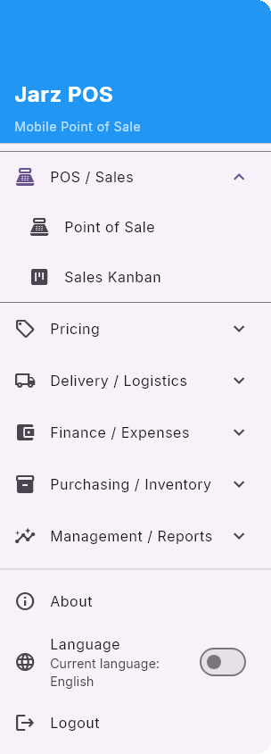

What a line manager can do
A line manager is a floor supervisor: everything a staff member does, plus the calls that need somebody accountable. Nothing here is available to staff.
Read the staff pages first
Everything on the other pages applies to you unchanged - start from Start here. This page is only the extra.

Cancelling an order
- 1
Card menu → Cancel Order
Never by dragging. The dialog shows the invoice, the total and the outstanding amount so you can see what you are reversing.
- 2
Give a reason
Pick one, or choose custom and describe it. This is the only record of why the order disappeared.
- 3
Hand the money back first
If the order was paid, the app says so: "The payment on this order will be reversed. Hand the money back to the customer before confirming." A credit note is created and its number is shown.
Partial payments block a cancel
The menu entry reads Cancel Order (settle payments first) and is greyed out. Settle or refund the partial payment, then cancel. Do not work around it.
Returning an order
A return is for goods that already went out and came back. Cancel is for an order that should not have existed. Do not use one for the other.
- 1
Pick what is coming back
Items coming back lists each line with how much of it can still be returned. Return the whole order or only some lines - the app tells you which one you are doing and what the customer will be credited.
- 2
Say why
Return type: customer return, failed delivery, damaged, or wrong item. Plus a written reason. This is what the returns numbers get read from later.
- 3
Decide the courier's fee
Pay the courier for this trip - yes, the courier keeps their delivery fee (they drove); no, it is reversed off their balance. A failed delivery that was the courier's fault is the case for no.
- 4
Decide the customer's money
Keep as customer credit or Refund cash now. If cash goes back, hand it over before you confirm.
A full return is final
A fully returned order moves to the Returned column and locks - nothing moves it again, by anyone. Be sure before you confirm a full return.
Custom shipping approvals
When staff use Request Custom Shipping, the order stops moving until you answer. Menu → Manager Dashboard → Pending Custom Shipping Approvals lists them with the current shipping, the requested amount and the reason.
- •Approve applies the requested amount and lets the order go out.
- •Reject takes an optional reason - write one, the person who asked will read it.
- •Answer these first thing. Every pending request is an order sitting still.
Watching and closing shifts
Menu → Shift Monitor. Filter by today, last 7 days or a custom range, by branch and by open/closed. The summary counts open shifts, closed shifts, and how many had a discrepancy.
Close This Shift closes a shift somebody else left open - the classic case being a staff member who went home without closing.
- 1
Count the drawer yourself
Enter the cash actually in the drawer. Any difference posts a cash over/short entry exactly as a normal close would - you are not hiding anything by closing it.
- 2
Give a reason - it is required
"Staff member left without closing" is a fine reason. An empty one is not accepted.
- 3
Read the courier warning
If the branch still has unsettled courier transactions, the dialog says so and makes you tick "I understand and want to close anyway". Those balances stay outstanding - closing does not clear them, and somebody still has to settle them.
The rest of your menu
| Entry | What it is for |
|---|---|
| Master Orders | Every order across branches, searchable by order number or customer, filterable by status, branch, payment and date. Use it when a customer calls about an order that is no longer on today's board. |
| Manager Dashboard | Recent orders, branch cash balances, and the custom shipping approvals above. You can also reassign an order to another branch from here. |
| Live courier map | Where your couriers are right now. Supervisors only - a courier can see their own run, never a colleague's. |
| Change collection method | On the order card. The customer paid differently than the order says - fix it here rather than letting the courier balance drift. It only shows while that order's courier balance is still open, and never on pickups, returns or partner orders. Online methods need a reference number. |
| Mute an order alarm | You are one of the few roles that can. Use it sparingly - a muted branch is a branch that misses orders. |
What is not yours
A line manager is a narrower manager, not a smaller owner. These sit above you, so they simply do not appear in your menu:
- •Approving expenses - JARZ Manager only. You submit like everyone else.
- •Manager Pricing in POS and editing price lists - manager tier.
- •Cash Transfer, Purchase Invoice, Stock Transfer, Inventory Count - manager tier. They are not in your menu at all.
- •Reports - the analytics dashboards are manager tier, so Reports opens on the single report that is yours: Materials & Consumables.
- •Reviewing and rejecting other people's item requests - you can raise them, purchasing closes them.